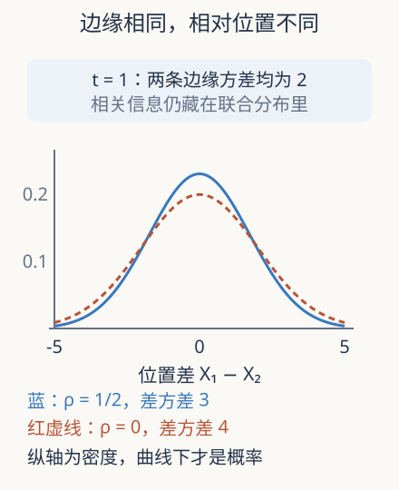

本页目录
动力学极限 01 · Liouville 与边缘：为什么少看几个粒子会丢掉闭合
空气里每个分子都服从力学，为什么不能直接把牛顿方程取平均就得到流体方程？本讲先找出平均之后究竟缺了什么。先修微分方程、概率密度与条件期望；所有课堂模型使用无量纲坐标。
1. 确定轨道与随机初值并不矛盾
给定 \(N\) 个粒子的全部初始位置与速度，微观模型规定一条轨道。实验无法精确准备每个分子的状态，因此用概率密度描述初值。随机的是我们研究的初始集合；给定初值后的演化仍可以完全确定。把这两层分清，才不会把统计方程误读成“牛顿定律被随机力代替”。
记相点 \(z_i=(x_i,v_i)\)，联合密度为 \(F_N(t,z_1,\ldots,z_N)\)，积分为 1。对光滑 Hamilton 系统，\(\dot x_i=v_i\)，\(\dot v_i=F_i\)。若力只依赖位置，相空间速度场的散度为零，连续性方程化为
这就是 Liouville 方程。沿轨道求导正好为零，所以 \(F_N(t,Z)=F_N(0,\Phi_{-t}Z)\)；密度可以被拉长、折叠，体积却保持。适当可积与边界条件下，精细熵 \(\int F_N\log F_N\) 不变。后面出现的熵耗散必须解释信息或极限发生了什么，不能在这一行凭空添加不可逆性。
2. 边缘是积分，不是挑一个典型坐标
对可交换的粒子分布，定义 \(s\) 粒子边缘
这里每个边缘都归一化为 1；若用“单位体积内的期望粒子数”作定义，会多出 \(N\) 或组合因子，方程系数必须一起改。边缘能给一个或几个指定标签的观测分布，但一般不能重建联合律。特别是 \(f^{(2)}\) 并不由 \(f^{(1)}\) 唯一决定。

3. 一个能算到底的闭合反例
取一维自由粒子 \(X_i(t)=X_i(0)+tV_i\)。初始位置独立标准 Gaussian，速度各自也是标准 Gaussian，彼此协方差为 \(\rho\)，位置向量与速度向量独立。于是
改变 \(\rho\)，任何一个粒子的位置边缘都不变，但位置差 \(D=X_1-X_2\) 满足
在 \(t=1,\rho=1/2\) 时，单粒子方差都是 2，位置差方差却是 3；若错误地把两个边缘相乘，会算成 4。位置差在零处的密度分别为 \(1/\sqrt{6\pi}\approx0.230329\) 与 \(1/\sqrt{8\pi}\approx0.199471\)。对很小的 \(h>0\)，事件 \(|D|<h\) 的概率约为 \(2h\) 乘这个密度。密度值不是事件概率，连续模型中 \(D=0\) 的概率本身为零。
这个例子没有硬球半径，也没有真正碰撞；它只严格反驳“相同一粒子统计必有相同二粒子接近概率”。在碰撞问题中，相遇处的联合结构恰好决定碰撞频率，闭合缺口因此有直接物理后果。
4. 对 Liouville 积分会出现什么
为看清代数，先考虑光滑偶势 \(\Phi\) 的平均场力
把 Liouville 方程对 \(z_2,\ldots,z_N\) 积分。假设速度方向衰减足够快、空间周期或边界通量已处理，被积掉变量上的散度项积分为零；剩下与粒子 1 有关的 \(N-1\) 项。交换性让它们相等，得到
一粒子方程右边要二粒子边缘；二粒子方程又要三粒子边缘。这种相接的方程组叫 BBGKY 层级。它没有把问题彻底解开，而是准确标记了未知信息藏在哪里。
若在可证明的极限下 \(f_N^{(2)}\to f\otimes f\)，右边才变成由 \(f\) 决定的平均力，得到 Vlasov 型闭合。请注意：光滑长程弱相互作用的平均场尺度，不是下一讲稀薄硬球的 Boltzmann–Grad 尺度。相同的“独立性”口号放到不同作用范围和时间尺度上，会得到不同方程。
5. 混沌传播究竟声称什么
所谓混沌通常是一个粒子数趋于无穷的统计定义：对每个固定 \(s\)，\(f_N^{(s)}\) 在指定拓扑中趋于 \(f^{\otimes s}\)。它不是说轨道毫无规律，也不是说有限 \(N\) 的粒子始终独立。碰撞会产生相关；证明要控制这些相关对所需观测的贡献，并允许正确的禁入区域与边界结构。
2024 年 Deng–Hani–Ma 的硬球推导工作及 2025 年修订控制了长时间的碰撞历史和累积相关。2025 年环面上的进一步结果，在二维或三维、特定随机初始集合、带速度权的界与缩放关系下得到边缘逼近。这里的推进是使统计闭合有误差控制，不是把任意相关初值直接替换成乘积。我们的 Gaussian 反例仍然有效，因为它根本没有满足那种渐近混沌假设。
用相关余项明确“忽略了多少”
可以把二粒子边缘写成 \(f_N^{(2)}=f_N^{(1)}\otimes f_N^{(1)}+c_N^{(2)}\)，把第二项定义为相关余项。这样代入一粒子方程，乘积部分产生闭合平均力，余项产生误差。目标不是笼统要求一切相关都消失，而是证明它在所需积分、权重和时间范围内足够小。
弱收敛尤其需要谨慎：对光滑有界观测成立的极限，未必允许直接代入碰撞边界上的奇异观测。硬球接触集合的几何和重碰撞历史，正是比 Gaussian 自由例子困难的部分。研究论文中的拓扑不是可跳读的技术注脚，而是结论允许我们观察什么的说明。
做数值检验时也应分层：先验证完整自由流的线性变换，再从联合协方差算出边缘和位置差。若程序直接把一粒子边缘相乘，就已预先删除要研究的相关性，之后无论画多少次动画，都不会发现这个闭合错误。
6. 实验与迁移题
默认静态结果：\(t=1,\rho=0.5\)；单粒子方差 2，两位置协方差 0.5，相关系数 0.25，位置差方差 3，零处密度 0.230329433。无交互时可直接用方差的双线性展开核对。
题一。 初始位置改为协方差 \(c\)，其余假设不变。位置差方差怎样改变？只观察速度边缘能否发现它？
独立作答后核对
位置协方差成为 \(c+\rho t^2\)，差方差为 \(2(1-c)+2t^2(1-\rho)\)。速度边缘完全看不到 \(c\)。必须说明完整初始联合假设，不能仅报每个变量的方差。
题二。 有人由完整 Liouville 熵恒定推断一粒子边缘熵也恒定。这一推断缺了什么？
独立作答后核对
取边缘丢掉相关信息，完整联合熵不等于各边缘熵之和，除非有独立性等额外条件。输运或相互作用可改变边缘及相关结构而保持完整熵。还需注意微分熵的有限性，不能随意对发散量作减法。
速查与来源
| 层次 | 对象 | 闭合问题 |
|---|---|---|
| 微观统计 | \(F_N(t)=F_N(0)\circ\Phi_{-t}\) | 维数随 \(N\) 增大 |
| 边缘 | \(f_N^{(s)}=\int F_N\) | 一般需要下一层 |
| 混沌传播 | \(f_N^{(s)}\to f^{\otimes s}\) | 固定 \(s\)、指定尺度与拓扑 |
下一讲：弹性碰撞与 Boltzmann。实际访问 2026-09-08：Golse，作者综述《The Boltzmann equation and its hydrodynamic limits》，2005；Deng–Hani–Ma，首稿 2024-08-14，v3 修订 2025-07-18；同作者，粒子到流体，2025-03-03，定义 1.3 与定理 1。后两项引用的是所核查研究版本，不声称穷尽后续进展。